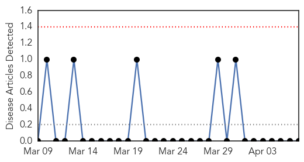
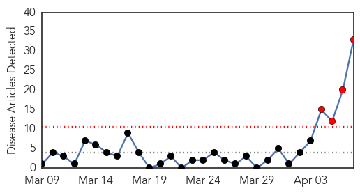
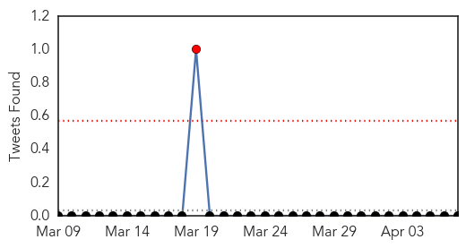
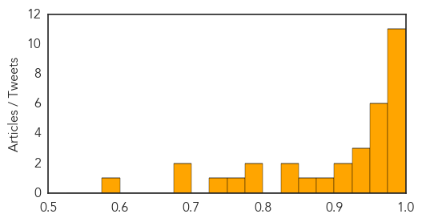

Yellow Fever
30-Day Web Trend
0 alerts, 0 warnings

30-Day Twitter Trend
0 alerts, 0 warnings

Article Locations


Article Confidences

Top Articles:
-
No articles found for Apr 07, 2014
Top Tweets:
-
No tweets found for Apr 07, 2014
Dengue Fever
30-Day Web Trend
4 alerts, 0 warnings

30-Day Twitter Trend
1 alerts, 0 warnings

Article Locations
Article Confidences
Top Articles:
- 0.999
- 11 Reasons Why Mosquitoes Are The Worst
- 0.999
- 11 Reasons Mosquitoes Are The Most Horrible Creatures On Earth
- 0.996
- Tiny bugs, big health threat
- 0.993
- April 7 is World Health Day
- 0.992
- WHO warns public vs small, deadly pests
- 0.988
- Vector-borne diseases have re-emerged and are spreading health authorities say
- 0.987
- World Health Day 2014: WHO Highlights on Preventing Dengue, Malaria, Other Vector-Borne Diseases
- 0.985
- Dengue and Malaria can be Eradicated through Awareness
- 0.980
- World Health Day highlights threat of vector-borne diseases
- 0.978
- World Health Day - Australia combating vector borne diseases in the Pacific - Fiji
- 0.977
- Vector-borne diseases in focus on World Health Day
- 0.971
- World Health Day Take simple steps to prevent vector- borne diseases
- 0.970
- World Health Day observed in Nagaland
- 0.968
- World Health Day: Just 1 bite can transmit diseases
- 0.966
- ‘Small bites, big threat’ is World Health Day message
- 0.963
- World Health Day: 3.5bn persons at risk of vector-borne diseases – WHO
- 0.956
- World Health Day: UN urges countries to prioritize combat against vector-borne diseases
- 0.940
- Small bite, big threat
- 0.934
- Simple preventive steps can control vector-borne diseases
- 0.932
- Nigeria Accounts For 25 Per Cent Of Vector-borne Diseases In Africa - WHO
- 0.923
- Govt to ensure healthcare: Hasina
- 0.913
- Nearly 95 percent of population in Colombo municipality inflicted with dengue
- 0.881
- UN Secretary-General sends message on World Health Day
- 0.851
- The mosquito menace by John J. Cohrssen and Henry I. Miller*
- 0.843
- Global Development Professionals Network
- 0.833
- Caribbean prone to insect-borne diseases
- 0.788
- World Health Day observed on April 7
- 0.780
- PTI flays poor healthcare standards in country
- 0.752
- Pacific.scoop.co.nz Solomon Islands Flooding – 26,000 Children Affected
- 0.725
- DOH launches 'Mosquito Dance'
- 0.696
- Flash flooding kills 19 in Solomon Islands
- 0.678
- Adviser for more work to check dengue
- 0.582
- World Health Day observed : 08th apr14 ~ E-Pao! Headlines
Top Tweets:
-
No tweets found for Apr 07, 2014